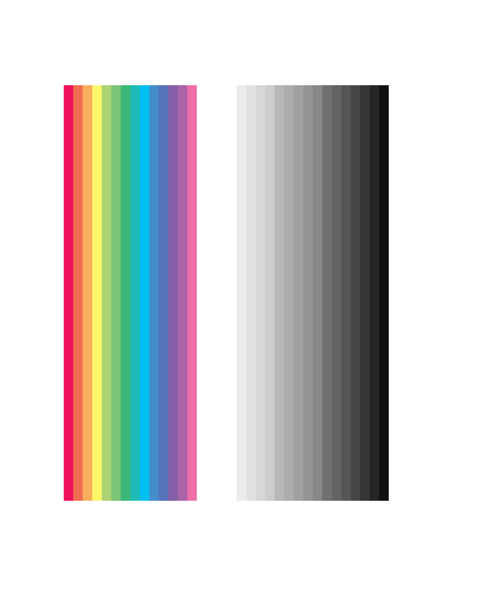
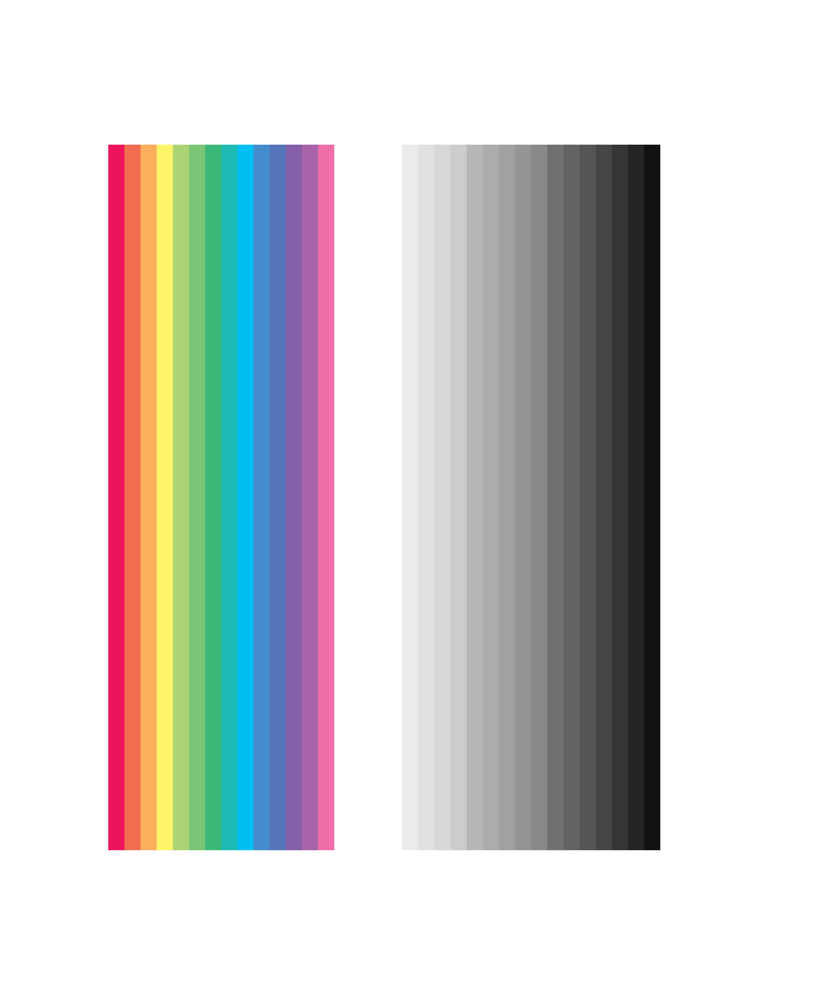

3 - D
FALL SEMASTER 2018
0 9・２０１8

2D Color/Composition
3D texture/effect
Color is the basic element of painting. It is produced when light strikes an object and reflect to our eyes. It has three properties. First one is hue which is color itself; second one is value which is lightness or darkness of the hue; the third is intensity which is also called chrome or saturation, refers to the brightness of a color.
Texture and effect are another two elements which increase the diversity of the painting. It helps painter jump out of the frame of 2 dimension and offers more visual information to the viewer.
For example, curved lines are usually softer and graceful. They smoothly move between two end points; they are unpredictable and more dynamic. Zigzag line creates a more intensive and energetic movement with diagonal lines. Compare to thin line, thicker line contains more power and gives emphasis. Thick line is bold and stable. So does effect. Special effect doesn't happen or exist in people's daily life, but it somehow expresses user's emotion appropriately.
Domain: affective computing, gesture computing, collaboration

2D Color/Composition
3D texture/effect
Color is the basic element of painting. It is produced when light strikes an object and reflect to our eyes. It has three properties. First one is hue which is color itself; second one is value which is lightness or darkness of the hue; the third is intensity which is also called chrome or saturation, refers to the brightness of a color.
Texture and effect are another two elements which increase the diversity of the painting. It helps painter jump out of the frame of 2 dimension and offers more visual information to the viewer.
For example, curved lines are usually softer and graceful. They smoothly move between two end points; they are unpredictable and more dynamic. Zigzag line creates a more intensive and energetic movement with diagonal lines. Compare to thin line, thicker line contains more power and gives emphasis. Thick line is bold and stable. So does effect. Special effect doesn't happen or exist in people's daily life, but it somehow expresses user's emotion appropriately.